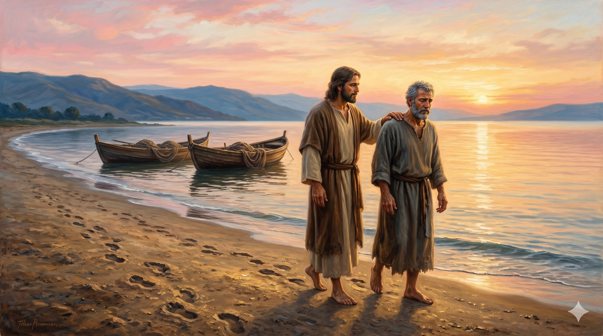

예루살렘 공회 앞에 선 베드로와 요한 — 화려한 대제사장의 예복과 학자들의 위엄 앞에서 갈릴리 어부 출신의 두 사람이 담대하게 서 있고, 그들 뒤로 수천 명의 군중이 보이며, 관원들은 당혹감과 경외감이 뒤섞인 표정으로 두 사도를 주시하고 있다
"그들이 베드로와 요한이 담대하게 말함을 보고 그들을 본래 학문 없는 범인으로 알았다가 이상히 여기며 또 전에 예수와 함께 있던 줄도 알고" — 사도행전 4:13
사도행전 4장은 초대교회가 처음으로 권력 앞에 서는 장면을 기록합니다. 공회원들은 당대 최고의 교육을 받은 율법 전문가들이었습니다. 그들 앞에 선 베드로와 요한은 갈릴리 출신 어부였습니다. 헬라어로 '아그라마토이'(ἀγράμματοι)는 문자를 모르는 자, 곧 정규 랍비 교육을 받지 않은 사람을 뜻하고, '이디오타이'(ἰδιῶται)는 전문가가 아닌 평범한 일반인을 의미합니다. 공회원들의 눈에 이 두 사람은 자격 미달이었습니다. 그러나 그들은 이상히 여겼습니다. 학식 없는 자들이 어떻게 이토록 담대하고 명확하게 복음을 선포하는가.
그 비밀은 단 하나였습니다. "전에 예수와 함께 있던 줄도 알고." 이것이 베드로의 자격증이었습니다. 학위도, 가문도, 사회적 지위도 아니었습니다. 예수님과 함께한 3년의 시간, 그 동행이 그를 만든 전부였습니다. 신약 전체를 통해 베드로를 돌아볼 때, 우리는 한 가지를 분명히 봅니다. 그를 변화시킨 것은 자기 수련이나 지식의 축적이 아니었습니다. 예수님과의 인격적 만남과 동행이 그 어부를 교회의 반석으로 세웠습니다. 이것이 베드로 이야기의 핵심이자, 신약이 우리에게 전하는 가장 강력한 메시지입니다.

갈릴리 해변의 새벽 — 예수님과 나란히 걸으며 대화하던 어부 시몬의 모습, 그 동행의 기억이 그를 평생 지탱한 힘이었음을 암시하는 따뜻하고 평화로운 장면
세상은 끊임없이 자격을 묻습니다. 어느 학교를 나왔는지, 어떤 경력이 있는지, 무엇을 이루었는지. 그러나 하나님 나라의 언어는 다릅니다. "예수와 함께 있던 줄도 알고" — 이 한 줄이 베드로의 이력서 전부였습니다. 오늘 우리에게도 같은 질문이 주어집니다. 당신은 예수님과 함께 시간을 보내고 있습니까? 말씀 안에서, 기도 안에서, 예배 안에서 그분과의 동행이 쌓여가고 있습니까? 그 시간이 우리를 빚어갑니다.
베드로는 실패한 사람이었습니다. 세 번 부인했고, 파도 앞에 흔들렸고, 안디옥에서 외식하다 바울에게 책망받았습니다. 그러나 그는 매번 주님께로 돌아왔습니다. 그리고 그 돌아옴의 역사 전체가 "예수와 함께 있었던" 사람의 이야기입니다. 우리도 그럴 수 있습니다. 완벽하지 않아도, 흔들려도, 다시 그분께 돌아가는 사람 — 그것이 오늘 하나님이 찾으시는 사람입니다.
당신의 학벌이 아니라 동행이 당신을 만듭니다.
예수와 함께 있는 사람 — 그것이 세상이 이상히 여기는 자격입니다.
오늘도 그분 곁에 머무십시오.